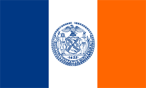

Symbole
Le drapeau

Le drapeau de New York se compose de bandes verticales bleue, blanche
et orange, de largeur égale, les mêmes couleurs que le drapeau des
Provinces-Unies tel qu'il était utilisé en 1625, l'année où Manhattan fut colonisée.
En son centre est reproduit, en bleu, le sceau de la ville. Sur ce dernier figurent plusieurs éléments symboliques :
- L'aigle est un pygargue à tête blanche qui représente l'État de New York.
- L'Amérindien évoque les premiers habitants de la région, tandis que le marin évoque les colons
: leur évocation conjointe suggère l'idée d'une union entre les deux peuples.
- Les castors font référence à la Compagnie néerlandaise des Indes occidentales, première compagnie à venir s'installer à New York.
- Le moulin à vent, les tonneaux de farine et les fleurs en couronne, représentant l’industrie new yorkaise.
- La devise latine « Sigillum Civitatis Novi Eboraci » qui signifie : « Le sceau de la ville de New York ».
La statue de la liberté

Située sur la Liberty Island, au sud de Manhattan à l'embouchure de l'Hudson et à
proximité d'Ellis Island. Son véritable nom est Liberty Enlightening the World,
en français La Liberté éclairant le monde, mais est plus connue sous le nom de
statue de la Liberté (Statue of Liberty).
Pesant 204 tonnes et mesurant 92,9 mètres, elle est construite en France
et offerte par le peuple français, en signe d'amitié entre
les deux nations et pour célébrer le centenaire de la Déclaration d'indépendance américaine.
La statue fut dévoilée au grand jour le 28 octobre 1886 en présence
du président des États-Unis de l'époque, Grover Cleveland.
L'idée est en général attribuée au juriste et professeur au Collège
de France Édouard de Laboulaye. Le projet fut confié, en 1871, au sculpteur français Auguste Bartholdi.
En raison de son statut de monument universel, la statue de la Liberté
a été copiée et reproduite à différentes échelles et en divers endroits du globe.
On en compte de nombreuses en France, la plus connue étant celle située à l'extrémité
de l'île aux Cygnes à la hauteur du pont de Grenelle, près de l'ancien atelier
de Bartholdi, qui est haute de 11,50 m. D'autres répliques sont également disséminées
de part le monde : à Las Vegas, au Japon, en Espagne, au Kosovo ...